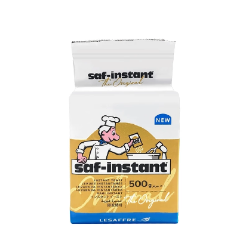

日銓貿易股份有限公司
關於日銓
品牌總覽
商品總覽
聯絡我們
首頁
>
商品總覽
>
烘焙・餐飲原料
>
燕子牌 高糖酵母金

保存方式：請放置陰涼乾燥處，開封後請密封冷藏保存。
保存期限：依產品包裝標示為準。
適用含糖量比例5%以上的高糖麵糰。
燕子牌 高糖酵母(金)
📦 500g
Swallow Brand Instant Dry Yeast (High Sugar)
成分：
酵母
產地：
法國
商品規格：
500g
商品特色：
法國進口菌種，品質純正
製作麵包必備原料，不需用水溶解
適合各種生產工序和方法
在不同環境溫度下提供穩定品質
使用方式：
直接混入麵粉裏或開始揉麵時掺在麵糰裏,燕子高活性乾酵母可以迅速並均匀的分散於麵糰裏,發揮最佳發酵力
為麵粉用量的 0.5% - 1%
← 回上一頁
聯絡我們